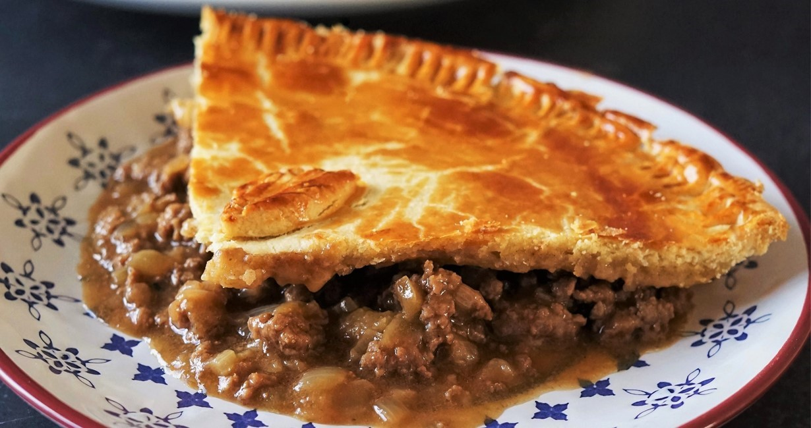

Mince Pie

Description
An absolute Kiwi classic and such a delicious family friendly dinner! This mince and cheese pie recipe will
be
your new favourite.
The mince filling is packed full of flavour - browned mince featuring a pretty good list of ingredients, but
all
essential to making this the most delicious pie filling out there. I've also added a carrot in there to up
the
veggie content of the pie - feel free to leave this out if you are going for more of a petrol station pie!
Ingredients
- 350 grams puff pastry
- 8 slices cheese (colby, edam, tasty, cheddar)
- ½ onion (finely diced)
- 1 carrot (optional, finely diced)
- 500 grams beef mince
- 2 cloves garlic (crushed)
- 2 cups beef stock
- 1 Tablespoon tomato paste
- 1 Tablespoon Worcestershire sauce
- 1 teaspoon marmite
- 1 teaspoon mixed herbs
- ½ teaspoon black pepper
- 2 teaspoons cornflour mixed with ¼ cup water
- 1 egg whisked with 1 teaspoon milk
Steps
- Heat 1 Tablespoon of olive oil in a medium frying pan over a medium heat. Cook onions and carrot for 5
minutes
until soft. Add garlic and mince and brown (about 5 minutes).
- Add all remaining pie filling ingredients, except cornflour and water, stir to combine and simmer for
20
minutes. Stir through the cornflour slurry and cook for a further 2 or 3 minutes until the gravy
thickens.
- Roll out ⅔ of the pastry to fit a 20-23cm round pie dish. Line the bottom of the dish with the pastry,
fill
with the mince filling and top with the cheese slices. Roll out the remaining pastry to fit the top of
the pie
and place on top, sealing the edges with your fingers or a fork.
- Prick holes in the pastry using a fork and brush with egg wash. Bake at 180°C/350°F for 40 minutes
until the
pastry is golden brown and cooked through.
- Serve immediately and store leftovers in the fridge for 4 days.